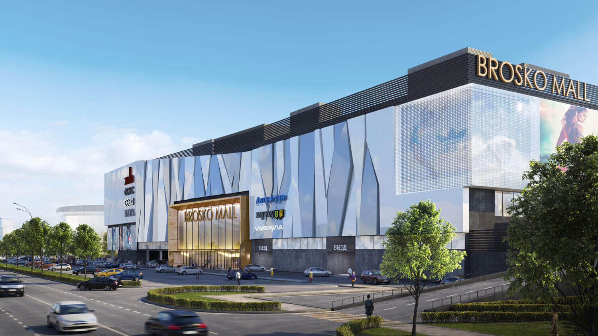

| Название места с кратким описанием | Фотография места | |
Площадь им. Ленина- центральная площадь города Хабаровска, находится в Центральном районе. |
||
Ул.Муравьева-Амурского- магистральная и центральная улица города Хабаровска, расположена в Центральном районе. |
|
|
Центральная набережная- улица в историческом центре Хабаровска, проходит от территории стадиона имени Ленина по берегу Амура и заканчивается причалом речного вокзала на Уссурийском бульваре. |
|
|
Арена Ерофей- спортивный комплекс в Хабаровске для игр по хоккею с мячом. |
|
|
ТРК Броско Молл- один из самых крупных ТРК на Дальнем Востоке. |
 |